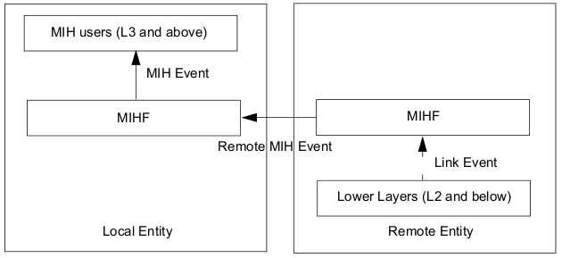

As ODTONE is developed to work in several platforms, we won't provide detailed tutorials for each mainstream operating system. We will rather present the main guidelines for installing ODTONE and any relevant notes on specific platforms that might prove an obstacle.
In order to correctly use ODTONE, you must first make sure that you have the required dependencies:
Boost is required to compile ODTONE, so in order to correctly use ODTONE you must first make sure you have the Boost libraries sources and Boost.Build installed in your system.
projects/
|
+-- boost_1_48_0/
|
+-- odtone/
Table 1. Setup boost-build.jam
|
boost-build.jam |
#==============================================================================
# Put this file at the root directory of your project or in any of its parent
# directories. Replace 'path-to-boost' with the path to the boost libraries
# sources.
#
# See the Boost.Build documentation for more details!
#==============================================================================
boost-build path-to-boost/tools/build/v2 ;
|
To compile ODTONE go to 'odtone' and run 'b2'.
![[Important]](../images/important.png) |
Important |
|---|---|
Consult the Boost.Build documentation for more details |
In a tarball
You can get the ODTONE source code tarball from our project page. Then just unpack it and you are ready to compile and install ODTONE.
From the git repository
You can create your own local copy of the ODTONE by cloning the git repository from ODTONE repository.
To clone the git repository you must run the next command:
git clone https://user@helios.av.it.pt/git/odtone/ odtone
Once you have obtained the ODTONE source code and have assured that you have the right dependencies you can compile it. ODTONE does not require any special procedures or layout for installation.
![[Note]](../images/note.png) |
Note |
|---|---|
|
For Linux We recommend GCC. Most distributions already come with the necessary pre-requisites, you may additionally need to install g++.
If you get link errors relative to undefined pthread symbols, this means
that your compiler does not link to pthreads by default. You can either pass
the " |
|
Note |
|---|---|
|
For Windows We recommend MSVC. You will need to download and install the latest Windows SDK. This already comes with all pre-requisite libraries and toolchains. |
|
Note |
|---|---|
|
For Android Android Bionic headers have several missing definitions for sockets and networking, this makes ODTONE impossible to compile with the Android SDK. However, since Android is based on linux, it is possible to compile ODTONE with the CodeSourcery GNU Toolchain for ARM Processors, at the expense of a bigger binary, since we have to link all libraries statically. The target must be arm-none-linux-gnueabi. Prebuild binaries are available at CodeSourcery In order to setup user-config.jam for Android, you must add the following line (without quotes):
"
To use the Android toolset, pass the command line option " The Android SDK has the necessary tools to run, debug and deploy the ODTONE binaries. |
|
Important |
|---|---|
|
By default, only the MIHF, the MIH-User and the Link SAP used in the demo are compiled. However, you can compile the remaining entities by defining their path during the compilation process. Here is an example on how to compile ICMP Link SAP: "b2 app/link_sap_icmp/" Path of each entity provided by ODTONE: *MIHF: src/mihf/ *Client: app/client/ *MIH-User: app/mih_usr/ *MIIS RDF Server: app/miis_rdf_server/ *DHCP-User: app/dhcp_usr/ *DNS-User: app/dns_usr/ *Link SAP: app/link_sap/ *ICMP LINK SAP: app/link_sap_icmp/ *Dummyserver: src/dummyserver/ |
As a supplement to this documentation, it is possible to generate incode documentation. This can be done using Doxygen, which parses the sources and generates the documentation. Doxygen uses a configuration file to determine all of its settings.
To simplify the creation of a configuration file, Doxygen can create a template configuration file for you. To do this call Doxygen from the command line with the -g option:
doxygen -g <config-file>
To generate the documentation you can enter:
doxygen <config-file>
ODTONE-MIHF
The MIHF can be configured based on a set of parameters, which can be configured either using an configuration file or passing them directly in the command line. The available configurable parameters are presented next:
MIHF Configuration Options: --help Display configuration options --conf.file arg (=odtone.conf) Configuration file --conf.recv_buff_len arg (=4096) Receive buffer length --mihf.id arg (=mihf) MIHF ID --mihf.ip arg (=127.0.0.1) MIHF IP --mihf.remote_port arg (=4551) Remote MIHF communication port --mihf.local_port arg (=1025) Local SAPs communication port --mihf.peers arg List of peer MIHFs --mihf.users arg List of local MIH-Users --mihf.links arg List of local Links SAPs --mihf.transport arg (=udp, tcp) List of supported transport protocols --mihf.link_response_time arg (=3000) Link SAP response time (milliseconds) --mihf.link_delete arg (=2) Link SAP response fails to forget --mihf.discover arg MIHF Discovery Mechanisms Order --enable_broadcast Allows broadcast messages --enable_unsolicited Allows unsolicited discovery --log arg (=1) Log level [0-4]
|
Note |
|---|---|
|
All configurable parameters are self-explained and, therefore, we will only mention those that are more complex to configure. List of peer MIHFs: Comma separated list of remote MIHF's. Usage: mihf.peers = <mihf id> <ip> <port> <list of supported transport protocols>, ... List of local MIH-Users: Comma separated list of local MIH-User SAP. Usage: mihf.users = <user sap id> <port> [supported commands> <supported queries>], ... List of local Link SAPs: Comma separated list of local MIH Link SAPs. Usage: mihf.links = <link sap id> <port> <techonoly type> <interface>, ... List of suppoted transport protocols: Comma separed list of the transport protocols available. For now UDP and TCP protocols are supported. Usage: mihf.transport = <udp/tcp>, ... |
SAP's
MIH Usr Configuration: --help Display configuration options --conf.file arg (=mih_usr.conf) Configuration file --conf.recv_buff_len arg (=4096) Receive buffer length --conf.port arg (=1234) Listening port --user.id arg (=user) MIH-User ID --user.commands arg MIH-User supported commands --mihf.ip arg (=127.0.0.1) Local MIHF IP address --mihf.local_port arg (=1025) Local MIHF communication port --dest arg MIHF destination
|
Note |
|---|---|
|
All configurable parameters are self-explained and, therefore, we will only mention those that are more complex to configure. List of supported events: Comma separated list of the MIH-Users supported commands. Usage: command = <command 1>, <command 2>, (...), <command N> |
MIH Link SAP Configuration:
--help Display configuration options
--conf.file arg (=link_sap.conf) Configuration file
--conf.recv_buff_len arg (=4096) Receive buffer length
--link.id arg (=link) Link SAP ID
--link.port arg (=1235) Listening Port
--link.tec arg Technology type
--link.link_addr_list arg Interface address
--link.event_list arg List of supported events
--link.command_list arg List of supported commands
--mihf.ip arg (=127.0.0.1) Local MIHF IP
--mihf.id arg (=local-mihf) Local MIHF ID
--mihf.local_port arg (=1025) Local MIHF communication port
|
Note |
|---|---|
|
All configurable parameters are self-explained and, therefore, we will only mention those that are more complex to configure. Technology type: Network interface card technology. Supported values: GSM, GPRS, EDGE, 802.3, Other, 802_11, CDMA2000, UMTS, CDMA2000-HRPD, 802_16, 802_20, 802_22. Usage: tec = <NIC technology> Interface Address: Network interface card address. Usage: link_addr = <interface address> List of supported events: Comma separated list of the Link SAP's supported events. Usage: event_list = <link event 1>, <link event 2>, (...), <link event N> List of supported events: Comma separated list of the Link SAP's supported commands. Usage: command_list = <link command 1>, <link command 2>, (...), <link command N> |
The local demo consists in a simple experiment to demonstrate message exchanging between the MIHF, the MIH-User and the Link SAP. It allows you to see how events are generated by the Link SAP and then reported to a MIH-User that subscribed to those events.

Configuration
In order to properly run the local demo you will need to edit the default Link SAP configuration in order to identify the interface that it will manage (tec and link_addr parameters).
Running Demo
The best way to run this demo is to open 3 terminals. On the first terminal you must start ODTONE-MIHF and on another terminal you must start the Link SAP. You can see that, at Link SAP bootstrap, the Link SAP will register itself with its the local MIHF. Now it's time to start the MIH-User with the configurable parameter --dest mihf1, on your remaining terminal. The --dest option tells the MIH-User to set the MIHF destination field of the message to mihf1.
If all went well, the MIH-User has requested for the capabilities of the local MIHF and printed out some information about the discovered interfaces (those that you previously configured on the Link SAP). For each discovered interface, the MIH-User will subscribe to all supported events. Now you can trigger some events by just disconnecting, disabling or shutting down your network cable/interface or wireless card (according to what you configured). You can see that the event notifications are propagated from the Link SAP to the MIH-User.
The remote demo shows the ability of a MIH-User to obtain event notifications that happen on a Link SAP located on another machine. You are required to have two machines for this experiment. The first machine will host an ODTONE-MIHF (mihf1) and the MIH-User, while the second will host an ODTONE-MIHF (mihf2) and the Link_SAP.

Configuration
Autonomous remote MIHF discovery is not taken in consideration, so you need to configure the remote MIHF's IP addresses, port and supported transport protocols on each one of the MIHFs. Edit the ODTONE-MIHF configuration file and add an entry to peers MIHFs in the form:
<mihf_id> <ip> <port> <list of supported transport protocols>
|
Note |
|---|---|
You need to edit the configuration file on both machines |
The mihf1 configuration file must look like:
[mihf] id = mihf1 local_port = 1025 remote_port = 4551 peers = mihf2 <mihf2_IP_address> 4551 udp transport = udp
The mihf2 configuration file must look like:
[mihf] id = mihf2 local_port = 1025 remote_port = 4551 peers = mihf1 <mihf1_IP_address> 4551 udp transport = udp
|
Note |
|---|---|
If you are using an Android emulator, the web traffic is routed through your development machine. So, the IP address assigned to Android emulator is the IP address of your machine. The development machine can be reached from Android emulator through 10.0.2.2. |
Running Demo
On the machine that host the mihf2 you must start a terminal and run ODTONE-MIHF. Then, on another terminal you must start the Link SAP. On the machine that host the mihf1 you must start a terminal and run ODTONE-MIHF. Then, on another terminal you must start the MIH-User with the configurable parameter --dest mihf2. The --dest option tells the MIH-User to set the MIHF destination field of the frame to mihf2.
Now, like in the local demo, you can trigger some events by just disconnecting, disabling or shutting down your network cable/interface or wireless card (according to what you configured). You can see that the event notifications are propagated from the Link SAP to the MIH-User.